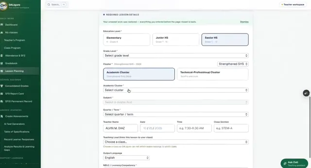
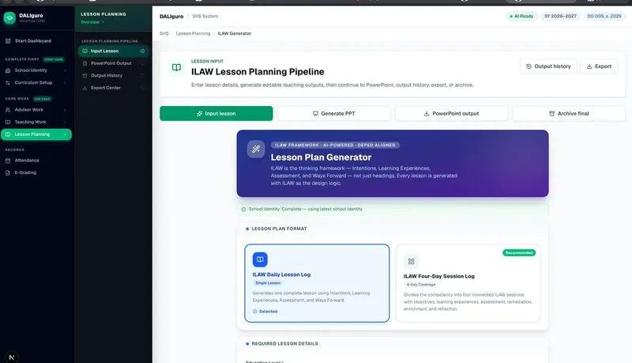
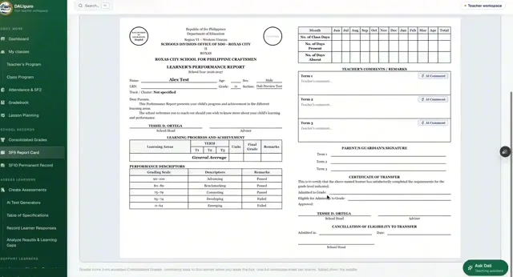
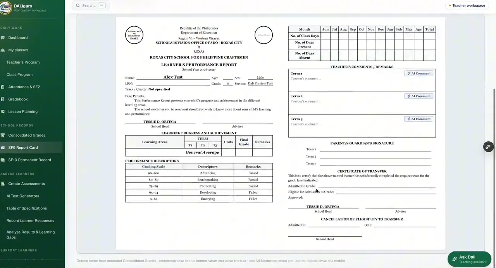

Live · in productionCase study · Education web app · Founder and builder
A teacher’s whole week of paperwork, in one AI-assisted workspace.
I teach Senior High School. DALIguro is the app I built so the plans, class records, grades and school forms I used to rebuild every term come from one set of records, with AI drafting the repetitive parts.
4ILAW lesson steps: Identify, Learn, Analyze, Write Back
15Sections scheduled by the class-program engine it grew from
1Private workspace per teacher; data is never shared between accounts
Recording · 1 min 40 s · captioned
Watch it working
A walk through the live app with test data. Jump to any part; captions describe each screen.
Recorded from the production app. Learner names are test records.
The case
Problem to result
Scroll through the four parts. On a wide screen the picture beside them follows along.
01 · Problem
Every term, the same paperwork from zero.
A teacher’s week is lesson plans, attendance, class records, grade computation, item analysis and school forms. Most of it is the same information typed again in a new format, and it eats the time meant for teaching.
Follows the Strengthened SHS curriculum: terms, not quarters, and the DO 009, s. 2026 forms for SY 2026–2027.
Learner records stay private: one teacher account is one workspace, and nothing is shared between accounts.
Teachers have no time for training, so setup is three steps and the dashboard opens on what is due today.

Lesson planning already knows the levels, clusters and terms.
03 · Process
Map the week, then build one routine at a time.
It started as a single HTML page that generated the SHS class program for 15 sections. I mapped the rest of a teacher’s week the same way and added one module per routine, each built on the same records.
Lesson planning follows ILAW (Identify, Learn, Analyze, Write Back), with DALI drafting and the teacher editing. Changes ship only after a check: the class program, for example, runs a schedule audit before it can be printed.

The ILAW lesson planning pipeline.
04 · Result
Encode once, and the forms fill themselves.
Grades entered in the gradebook flow into the consolidated matrix and onto the SF9 report card. The dashboard opens on what still needs doing today: attendance not yet recorded, draft scores and learners to review.
DALIguro runs in production on Vercel. Some modules are still in development, and I label them that way in the app.

The SF9 report card, filled from the same records.
Lesson planning already knows the levels, clusters and terms.
The ILAW lesson planning pipeline.

The SF9 report card, filled from the same records.
Try it yourself
Run an item analysis
A ten-learner quiz in Grade 11 Earth Science. Tap any answer to mark it right or wrong; the analysis and the remediation list update as you go. Everything runs in your browser.
Answer sheet · 10 learners × 8 items
Learner answers. Each button marks an answer correct or wrong.
Item level: M mastered (75% or more correct) · N nearly mastered (50–74%) · L least mastered (below 50%). D is the discrimination index: upper 27% minus lower 27%.
This is a simplified version of the rules in my Smart Automated Item Analysis workbook, which handles up to 60 items and prints DepEd-style reports with signatories. In DALIguro the same analysis runs after QR assessment.
Who did what
My role vs AI’s role
DALIguro is built with AI-assisted development. Here is where the line sits.
Me · founder, product owner, builder
The problem, the decisions, the checks.
Found the problem in my own teaching week and decided what to build, in what order.
Designed the data model: one private workspace per teacher, one set of records feeding every form.
Wrote the DepEd rules into it: Strengthened SHS terms, SF1–SF9, DO 009, s. 2026.
Wrote the specs and completion gates the coding agents work to, then reviewed and tested each change.
Reviews security myself: tenant isolation, authorization and rate limits on AI routes.
AI · coding agents and DALI
Drafts, under supervision.
Coding agents draft code from my written specs and must show evidence before a task counts as done.
They help find bugs and missing pieces, which I verify before anything merges.
Inside the app, DALI drafts lesson plans and assessments; the teacher edits each draft before using it.
For the in-app agent now in development, learner data is redacted on the server before the AI sees it.